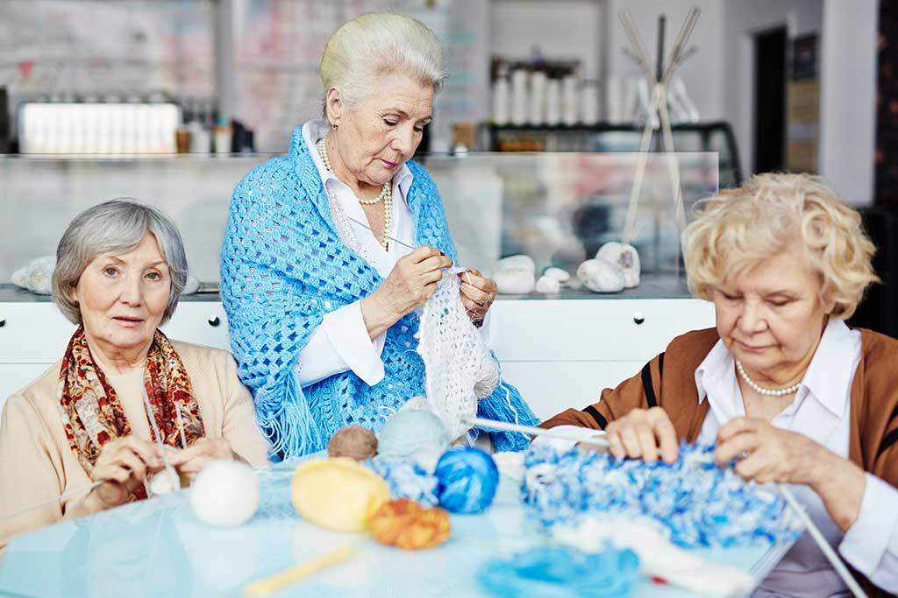
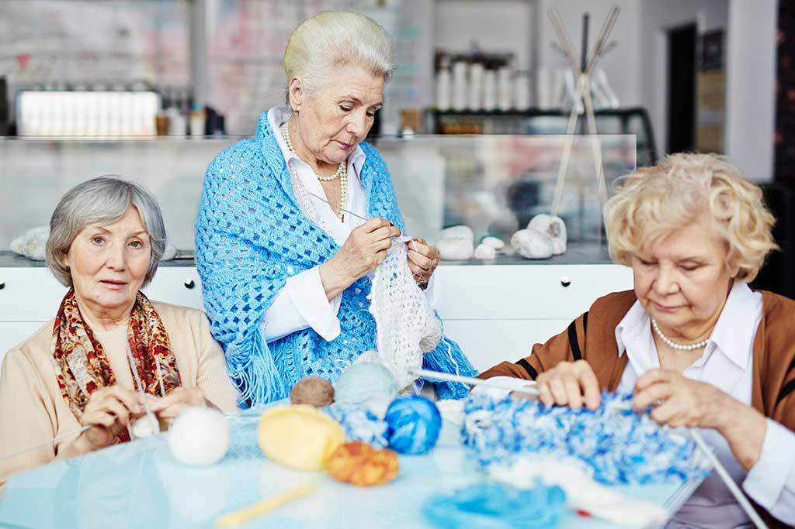

Enriching Daily Activities
We believe that an active, engaged life is essential for seniors' well-being. Our daily activities are designed to stimulate the mind, strengthen the body, nurture the spirit, and create opportunities for joy and connection. Each activity is adapted to individual abilities and interests, ensuring everyone can participate and benefit.
Social Engagement
Building connections and fostering relationships

Social connection is fundamental to emotional well-being. We facilitate meaningful social interactions through:
- Regular visits with family and friends
- Group activities and social gatherings
- Community outings and events
- Phone and video calls with loved ones
- Participation in local senior groups or clubs
- Celebrating birthdays, holidays, and special occasions
Gardening
Connecting with nature and nurturing growth
Gardening provides physical activity, sensory stimulation, and a sense of accomplishment. Activities include:
- Planting and tending to indoor or outdoor gardens
- Watering and caring for houseplants
- Harvesting vegetables, herbs, or flowers
- Creating flower arrangements
- Learning about different plants and their care
- Enjoying the beauty and tranquility of nature
Physical Wellness
Maintaining strength, flexibility, and mobility
Regular physical activity is crucial for maintaining health and independence. Our wellness activities include:
- Gentle stretching and flexibility exercises
- Chair exercises and seated workouts
- Short walks (indoor or outdoor)
- Balance and coordination activities
- Breathing exercises and relaxation techniques
- Adaptive exercises tailored to individual abilities
Cognitive Games & Mental Stimulation
Keeping the mind sharp and engaged
Mental stimulation is essential for cognitive health. We offer a variety of brain-boosting activities:
- Puzzles (crosswords, jigsaw puzzles, word searches)
- Card games and board games
- Memory games and trivia
- Reading and book discussions
- Brain training exercises
- Learning new skills or hobbies
- Reminiscence activities and storytelling
Creative Expression
Unleashing creativity and self-expression
Creative activities provide joy, purpose, and a sense of accomplishment. We encourage expression through:
- Arts and crafts (painting, drawing, coloring)
- Music appreciation and singing
- Writing (journals, letters, stories, poetry)
- Knitting, crocheting, or other handcrafts
- Photography and photo organization
- Creating memory books or scrapbooks
- Dancing or movement to music
 

Cooking & Baking
Nourishing body and soul through food
Cooking and baking are wonderful ways to engage the senses, share traditions, and create something meaningful. Activities include:
- Preparing favorite family recipes
- Baking cookies, cakes, or bread
- Meal planning and grocery list creation
- Learning new recipes and cooking techniques
- Sharing cooking tips and food memories
- Creating special meals for family visits
- Preserving family recipes and traditions